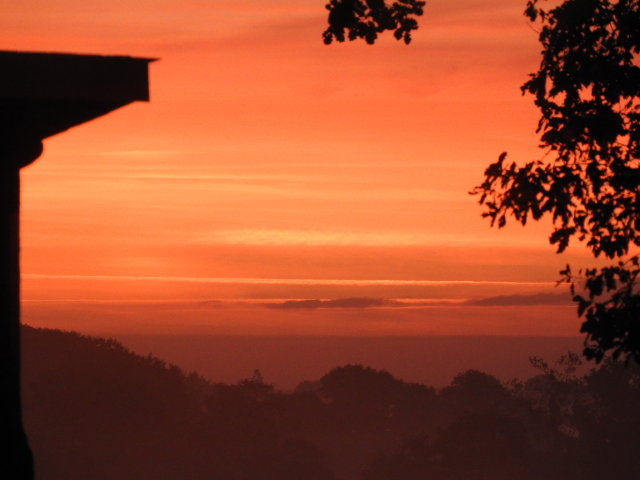
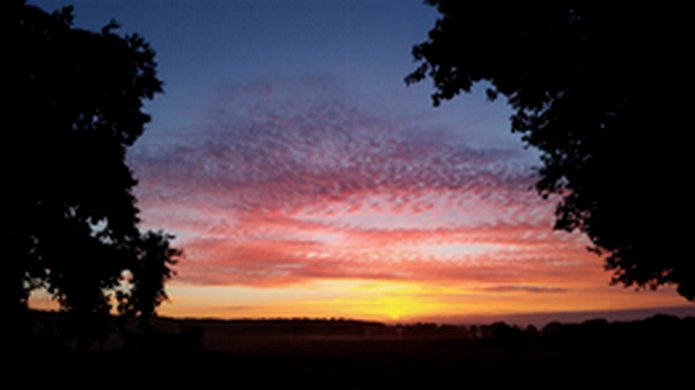
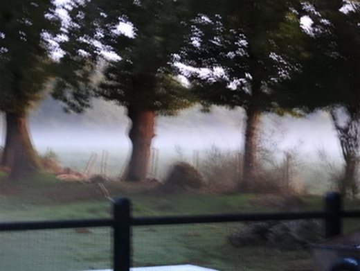
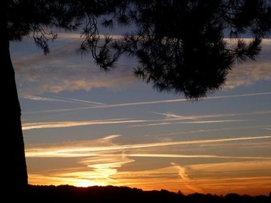
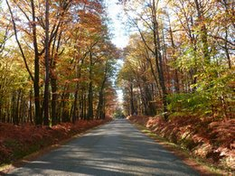
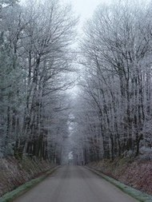
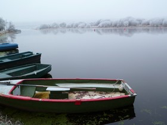

Qué ver por la zona
Las cuatro estaciones
Fotos tomadas en un radio de 2 km alrededor de la casa de huéspedes, a lo largo de las estaciones.
Estas fotos se tomaron en un radio de 2 kilómetros alrededor de la casa de huéspedes. Una buena razón para madrugar (sin despertar al propietario del B&B), o para pasear hasta tarde en verano por los alrededores de la casa.






